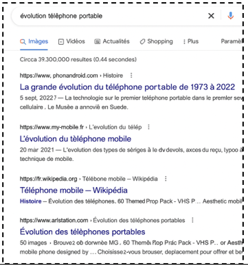
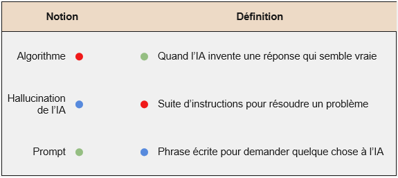
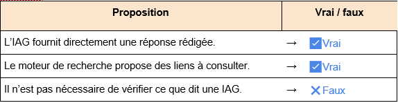
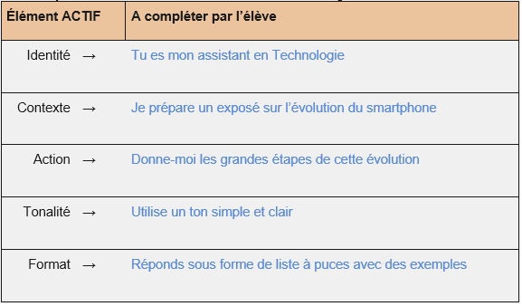
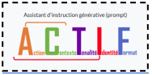
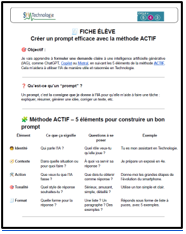

Séance 1 (correction) : Utiliser l’IA Générative comme assistant personnel
Séance 1:Utiliser l’IA Générative comme assistant personnel
En salle de cours, deux élèves discutent avant de rendre leur travail.
🗨 Élève 1 : "J’ai demandé à ChatGPT de me faire tout mon devoir sur l’évolution des téléphones. Il m’a tout rédigé, c’est magique !"
🗨 Élève 2 : "Sérieux ? Moi, j’ai fait une recherche sur Google et j’ai comparé les infos. D’ailleurs, ton devoir parle d’un téléphone invisible… c’est pas un peu bizarre ?"
🧑🏫 Le professeur intervient :
"Et si on apprenait à bien utiliser ces nouveaux outils pour qu’ils nous aident vraiment à progresser en Technologie ?"

Mes constats, mes observations :
● Les élèves utilisent de plus en plus des IAG comme ChatGPT sans en comprendre les limites ni savoir s’en servir correctement.
● Ils confondent souvent moteur de recherche et IA générative.
● Certains croient que l’IAG dit toujours la vérité.
● D’autres ne savent pas formuler une demande claire à l’IA …
Mon problème à résoudre
Comment utiliser une intelligence artificielle générative en Technologie de manière efficace, éthique et utile ?
Mes idées pour le résoudre
● On pourrait apprendre à écrire une bonne question (prompt) pour que l’IA comprenne bien ce qu’on cherche.
● On devrait toujours vérifier les réponses de l’IA.
● Il faut que l’IA nous aide, mais pas qu’elle fasse tout à notre place.
● On pourrait comparer ce que dit l’IA avec le cours ou d’autres sources.
● On peut apprendre à repérer quand elle se trompe
Activités (niveaux 1 et 2)
Avant d’apprendre à écrire un bon prompt, il est essentiel de comprendre ce qu’est réellement une intelligence artificielle générative (IAG), ce qu’elle peut faire… et surtout ce qu’elle ne peut pas faire.
Ces premières activités vont t’aider à distinguer l’IAG d’un moteur de recherche, à identifier ses limites, et à repérer les bons usages en Technologie.
Tu vas aussi découvrir quelques notions-clés comme « hallucination », « algorithme » ou « prompt », pour mieux dialoguer avec ces outils.
QCM/QCU / Associations
● Quelle phrase définit le mieux une intelligence artificielle générative ?
Un moteur de recherche qui donne des liens
Un programme qui fabrique des objets
Un outil capable de créer du contenu (texte, image…) à partir d’une demande
Un robot qui fait les devoirs à notre place
● Quelles sont les limites de l’IAG ? (Plusieurs réponses possibles)
Elle peut donner des réponses fausses
Elle connaît tout et ne se trompe jamais
Elle consomme de l’énergie pour fonctionner
Elle est toujours plus rapide qu’un moteur de recherche
● Associe chaque mot à sa définition : (Relier les points)

Ressources:
Les grands types d’apprentissage des intelligences artificielles et leurs usages possibles
● Affirme si les phrases suivantes sont vraies ou fausses :
Une vidéo montre un élève qui pose la même question à Google et à une IAG comme ChatGPT.

Activités (niveaux 3 et 4)
Maintenant que tu connais les avantages et les limites de l’IA Générative, il faut savoir formuler la bonne requête (Prompt) pour guider la production de l’Intelligence Artificielle.
Application - Rédaction de prompt contextualisé
- A partir de la fiche “Créer un prompt efficace avec la méthodeACTIF ”, complète le tableau suivant avec une consigne claire à l’IAG :
Tu dois interroger une intelligence artificielle pour qu’elle t’aide à présenter l’évolution du smartphone dans le cadre d’une activité de Technologie.

Ressources:

Assistant d'instruction générative (Prompt)

Créer un prompt efficace avec la méthode ACTIF
2. À partir de tes réponses dans le tableau précédent, rédige ici un prompt complet que tu pourrais entrer dans une IAG comme ChatGPT ou Mistral.
✅ Réponse attendue :
"Tu es mon assistant en Technologie. Je prépare un exposé sur l’évolution du smartphone. Donne-moi les grandes étapes de cette évolution. Utilise un ton simple et clair. Réponds sous forme de liste à puces avec des exemples."
Question d’analyse (justification)
Un élève utilise une IAG pour rédiger tout son devoir sur l’évolution des smartphones sans le lire ni le corriger.
Question :
Qu’est-ce qui peut poser problème s’il ne lit pas la réponse de l’IA ? Que lui conseillerais-tu pour mieux s’en servir?
Réponse attendue :
● Il peut y avoir des erreurs ou de fausses informations.
● Le texte ne correspond peut-être pas aux attentes du professeur.
● Il ne progresse pas lui-même en Technologie.
Conseils attendus :
● Toujours lire et reformuler la réponse de l’IA.
● Vérifier avec ses connaissances et le cours.
● Utiliser l’IAG comme une aide, pas pour faire tout à sa place.
Ma synthèse
1. Selon toi, en quoi une IAG peut-elle t’aider à mieux travailler en Technologie ?
→Une IAG peut m’aider à résumer un cours, à reformuler une consigne, ou à m’organiser dans un travail en groupe. Elle me donne des idées, mais je dois toujours vérifier ce qu’elle dit.
2. Que dois-tu toujours faire après avoir utilisé une IAG ? Pourquoi ?
**→**Je dois relire, corriger ou reformuler ce que l’IA m’a donné, parce qu’elle peut se tromper ou inventer. Je dois aussi vérifier que c’est bien ce qu’on attend dans le cours.
Ressources:
Les intelligences artificielles génératives (IAG), prompts, avantages et biais (Hors programme)